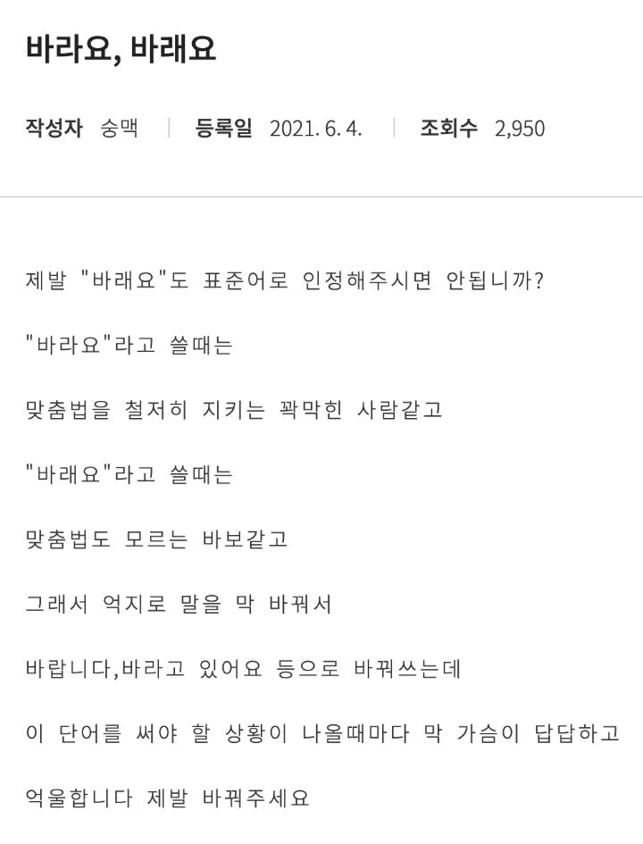

제발 "바래요"도 표준어로 인정해주시면 안됩니까?
댓글
며칠은 무슨 문법적 의미가 있길래 며칠이냐 ㅋㅋㅋ
어원이 며츨임. 다른 이유는 없음
나도 몇흘이 어원이여서 그 모양인 건 알기하는데 그래도 이상하자나
지붕이나 무덤도 분석하면 집+웅이고 묻+엄인데 그냥 소리나는대로 씀. 현대 국어에 웅과 엄이 명사를 만드는 역할을 상실해서 굳이 밝힐 필요가 없어서인데
며칠의 경우는 반대로 몇+을? 며+츨? 여기에 해당하는 다른 사례가 안 나타남.
훈민정음 창제 당시부터 며츨 형태로 나와서 어원을 더 찾아올라가기도 어랴움
아니 바래다는걸 짜장면보다 많이 쓸거같은데
짜장은 되고 바래는 왜 안됨
자장면/짜장면은 명사라서 그냥 쿨하게 복수 인정하면 그만인데(형태론)
바라다 / 바래 는 용언이라서, 문법의 영역으로 넘어가버림.(통사론)
쉽게 말해서 바래를 인정하면 바랩니다, 바랩니까? 등등도 다 인정해야하는데 이렇게는 또 안 쓴단 말이지.
국어 문장의 종결표현, 높임표현 등등 여러 부분에 다 걸려서 + 바래를 많이 씀에도 바랍니다 처럼 바라를 어근으로 여전히 인식하는 사람이 많은 점 등을 근거로 안바꾼다고 보면 됨.
근데 뭐 편하게 쓰고싶은대로 쓰고 공적인 자리에서 격식 갖출 때나 좀 더 신경쓰면 되지 뭐.
바랩니다라고 쓰는 사람들이 대세가 되먼 바뛸거임
바래가 된다고 사람들이 바랩니다라고 쓸 가능성은 낮음.
바라다-> 바래 활용방식이
여 불규칙(하여 -> 해) 활용이랑 완벽하게 같거든.
실제로 사람들이 쓴 글들 보면 바라였다 라고 쓴 사례도 많이 발견되고.
그게 문제임
차라리 모든 용례를 전부 바래 바라 둘다 인정해주면 오히려 쉬움
용언의 용례에서 특정 활용만 예외처리한다? 그러면 문법 다 꼬이는 거임
위에 글 쓴 사람도 바래를 인정해준다고 바랩니다 라고 안쓰는게 문제라고 하는 거.
용언은 인정해주는디 그 활용은 아니라고?
님이 지금 하는 얘기는
'~하다'의 -어/아 활용형은 '~해' 라고 문법적으로 정해놨으니까
'~합니다'도 '~햅니다' 이렇게 바꿔야 문법적으로 통일성이 있다고 주장하는거랑 같음.
(또는 반대로 '햅니다'가 아니라 '합니다'인데 왜 '~해'를 인정해주냐고 반문하는 것과도 같음)
바라다가 바래가 되는건 '바라 + 어/아 = 바라여 = 바래' 인거고 (하 + 어/아 = 하여 = 해)
바랍니다는 바라 + 'ㅂ니다(습니다)' 라서 바랩니다라고 바꿔질수가 없는 전혀 다른 경우임.
현재도 '~하길 바라' 로 말 끝내기 어색해서 '~하길 바랍니다' 라고 일부러 바꿔 적는다고들 하지,
바랩니다는 왜 인정 안해주냐는 사람 없음.
못배워 먹은 놈들 때문에라도 절대 허용 해주지 말길ㅋㅋㅋㅋ
이거랑 또 죽어도 표준적인게 입에 안붙는게
'넓네' 의 발음
넙네 ×
널네×
널레 ○
와 사진만 보고 예약한 호텔방 실제로 보니 생각보다 널레?
경차만 타다가 suv 타니가 실내가 진짜 널레
ㅅㅂ 누가 널레라고 함...
넙네가 아니라니 부랄이 띵
짧네도
짤레임
과학: 이론이 현실과 맞지 않으면 현실에 맞게 이론을 수정함
맞춤법: 무식한 사람으로 가스라이팅하고 조리돌림
바라요 는 어색해서
바랍니다 로 많이 씀
바래고 바래든 런든여행을 떠났다
'여 불규칙 활용' (하여 -> 해) 으로 포함시키면 깔끔하게 정리됨.
실제 언중들이 바라다를 바래 라고 활용하는 과정도
하다가 해가 되는 것과 같음.
바라다 + 아/어 = 바라여 = 바래
(하다 + 아/어 = 하여 = 해)
여러 댓글에서
바램, 바랩니다까지 인정되어 버린다는 둥 하는데
하다 -> 하여/해 를 허용한다고
함 -> 햄, 합니다 -> 햅니다가 되지 않듯,
바라의 여 불규칙 활용 (바라여/바래) 를 허용한다고
바램, 바랩니다까지 인정될 일은 없음.
다만 바라다를 여 불규칙 활용으로 인정할 근거가 있느냐?(어원, 과거 사용례 등) 하면
그런거 없고 그냥 현재 사람들이 그렇게 많이 쓴다는거밖에 없긴 한데
그렇게 따지면 그냥 사람들이 많이 쓴다는 이유로 규칙 일관성 버리고 예외를 인정한 사례들 많음.
맛있다 [마딛따/마싣따]
월요일 [워료일] 이건 심지어 표준 발음법 29항에 따르면 [월료일]이 맞는데도 [월료일]은 틀린 발음이라고 해버림.
이런식으로 대중들이 많이 사용한다는 이유로 예외를 허용하는 사례들이 많으니
바라다를 여 불규칙으로 포함시키면 되지 않느냐는 주장도 하게 되는거지.
닉값 ㄷㄷㄷ
'바래'로 국한하지 않고 '바라여' 형태로 쓰인 사례 찾아보니
1934년 조선일보에 바라여 라고 쓰인 자료가 있네.
현대에 쓰이기 시작했다고 해도 최소 90년 이상은 사람들이 바라여(≒바래) 라고 했다는거니
바라다의 여 불규칙 활용이 완전 근본 없는 활용방식이라고도 할 수 없어 보임.
무식한새끼들 말 하나씩 들어주면 끝도 없어
어설프게 문법 주워들은 놈들이 문법이라 예외를 만들수없어욧!!ㅇㅈㄹ하면서 아는척 티내고 싶어 하더라ㅋㅋㅋㅋ
진지하게 언어연구하는 학자들도 바래바라에 대해서는 각자주장이다른데 ㅋㅋ
바라요는 무슨 ' 내이름은 바라요!' 하는거같은데ㅋㅋㅋ
모든 사람이 발음을 "바래요"라고 하는데 뭐 원형 지킨다 어쩐다 하면서 바득바득 바라요가 맞다고 우기는거 존나 병신같음
규칙이 예외없이 모두 적용되는 언어가 어디있냐 용법이 우선이지 뭔 문법이니까 안된다고 지랄이여
자장면 짜장면은 버스를 뻐스라고 인정 안 한 거랑 비슷한 이유였다던데
걍 복수 표준어로 인정해라 씹련들아. 존나 틀딱 기관 아니랄까봐 개 꽉막힘
3집타이틀: 바래를 꿈꾸며
친해지기를 바라 ㅇㅈㄹ하는거 존나 이상함
다시 태어나도 너만 바래~~ 다시 사랑해도 너만 바래~~
난 언체인이니까 국립국어원따위는 무시하고 바래요 쓸거야
앞 좌석은 되고 뒷 좌석은 안된다는데 뭘 기대함ㅋㅋ
개인적으로는 바라랑 바래 구분해서 쓰는 편인데
입으로 말할 때는 굳이 바라라고 말하진 않음
물론 남이 바라를 바래라고 써도 딱히 지적하지도 않고
다시 태어나도 너만 바라~
딱 이거 생각했는데 ㅋㅋㅋㅋㅋㅋㅋㅋㅋㅋㅋ
바라요 <- 뭔가 개촌스러움
알아도 안쓴다
맞춤법이 바뀌어야지. 짜장도 자장이라고 쳐부를거 아니면
그간 국립국어원을 기준과 권위라곤 없는 집단으로 보던 애들이 복수 표기/사용에 대해 국립국어원의 인정을 바란다는 게 조금 웃기긴 한데, 국립국어원은 이걸 인정해도 욕 먹을 거고 안 해도 지금처럼 욕 먹을 거라 그냥 안할듯.